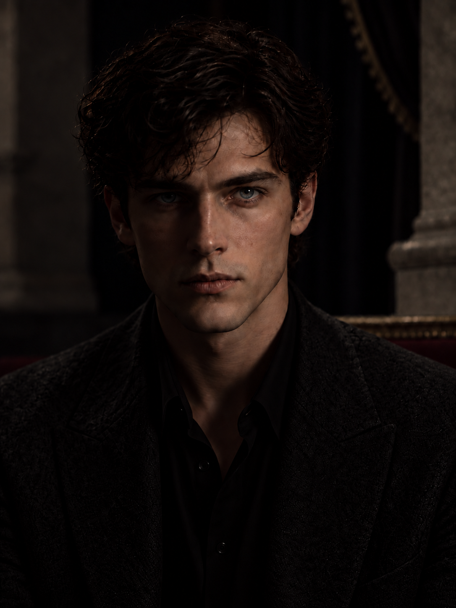
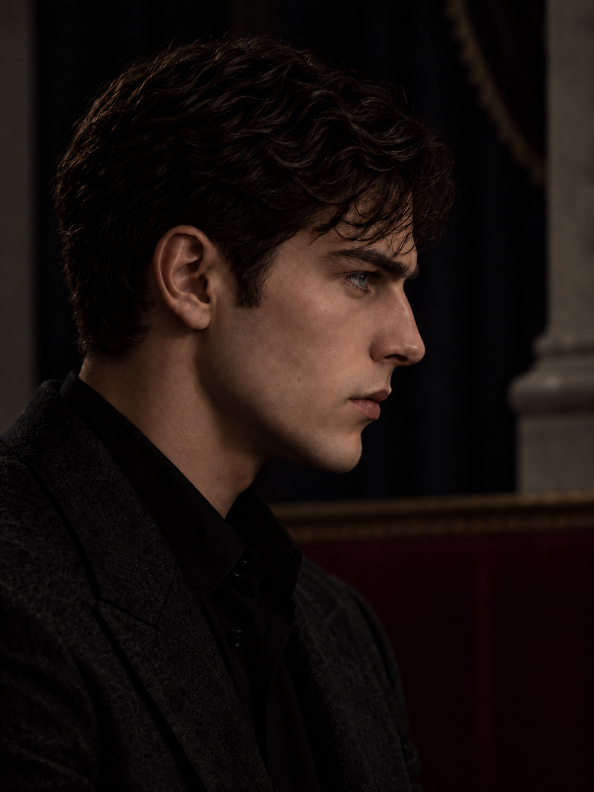

中性光三视图
脸部沿用 FB77；FB82 在 FB75 主卷束下补足部分反侧发根覆盖。眼周、鼻体、下颌衔接和整体神态仍未充分还原。


夜间续作已停止 · 保留工作副本 · 整体相似度未通过
模型图均为实际 Blender 工程渲染。结构仍有明显不足，不能用暗光或网格审计合格代替人物还原。
可编辑工程 · 旋转检查真实网格 · 同机位叠图 · 工程说明与未解决项 · 此前实验记录
脸部沿用 FB77；FB82 在 FB75 主卷束下补足部分反侧发根覆盖。眼周、鼻体、下颌衔接和整体神态仍未充分还原。
隐藏毛发、眉毛和独立眼球组件，检查头部表面。眼区显示底层占位面，不能据此判断完整眼球质量。


同一模型，灯光另存工程。暗部遮蔽的问题仍以中性光与灰模判断。


这些是实际正交相机渲染，没有对应原图，不能作为相似度证明。修补反侧露皮后仍有小块偏稀区域，平视的幼态与木然感也仍存在。


T22 为主，P14 只作侧面辅助。两张独立生成，不能假定完全对应同一三维形状。


本次交付记录更新：2026-10-14T07:48:11.681942+08:00。逐轮取舍 · 续作状态 · 独立重建验证